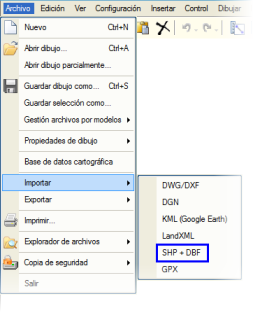
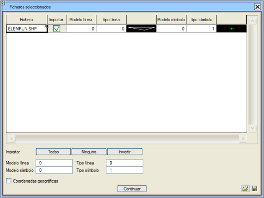
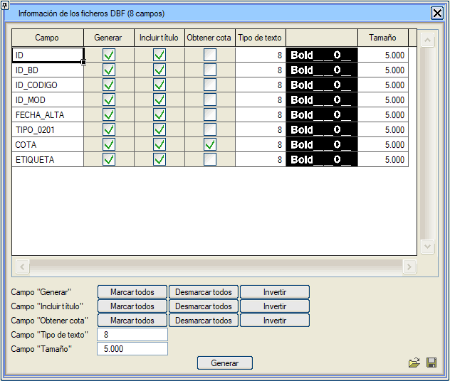

| |
|
.SHP + .DBF DOSYALARINI İÇE AKTARMA
|
|
Shapefile, ESRI (Enviromental Systems Research Institute) tarafından geliştirilmiş bir vektörel temsil formatıdır. Değişken sayıda dosyadan oluşur; bu dosyalarda coğrafi elemanların konumları (shape dosyası .shp) ile bu elemanların öznitelikleri veya özellikleri (dBase tablosu .dbf) dijital olarak saklanır. Bu tür dosyaların bazı temel özellikleri şunlardır: Tek bir dosyadan değil, 3 ila 8 arasında bağımsız dosyadan oluşur. Bu dosyalardan her birinin belirli bir işlevi vardır ve bir tür bilgiyi saklar (geometrik elemanlar, öznitelikler, projeksiyon, meta veriler...) Geometrik elemanlar, shape dosyasında köşe noktaları (vertex) aracılığıyla saklanır. Her shapefile sadece bir tür eleman içerebilir (noktasal, çizgisel veya alansal). Shapefile türüne bağlı olarak, bu köşe noktalarında yükseklik (PointZ) veya ölçüm (PointM) değerlerini de saklayabiliriz. Dosya > İçe Aktar > SHP + DBF açılır menüsünden bu tür dosyaları programa aktarabiliriz..edm'ye (Istram/Ispol harita dosyası) dönüştürme işlemi yapıldıktan sonra, ilişkili DBF dosyasında bulunan bilgilerle metinler oluşturulabilir. 
Tümü kutucuğu aracılığıyla, içe aktarma işlemi için .shp dosyasında bulunan tüm elemanları seçebilirim. Hiçbiri kutucuğu ile tüm elemanların seçimi kaldırılır ve Ters Çevir kutucuğu ile aktif olan elemanlar pasif, pasif olanlar ise aktif hale getirilir. Çizgi modeli, Çizgi tipi, Sembol modeli ve Sembol tipi kutucukları aracılığıyla tüm .shp elemanlarına tipleri ve modelleri atayacağım. Eğer içe aktardığımız dosya bu tür koordinatlardaysa, Coğrafi koordinatlar kutucuğunu aktif hale getirmemiz gerekir. Devam'a tıklandığında xxx.shp dosyasının içe aktarımı tamamlanmış olur (xxx dosya adıdır). Program, aşağıda analiz edeceğimiz bir dizi özelliği uygulayabilmek için aynı adda xxx.dbf .dbf dosyasının olup olmadığını kontrol eder. 
Oluştur, Başlık ekle, Kot al, metin tipi, boyut gibi farklı sütunlarda içe aktarmak istediğimiz elemanları aktif hale getireceğiz. .DBF'nin alanlarından birinin üzerindeki Kot al sütunu etkinleştirildiğinde, o alanın değeri ilişkili elemanın (çoklu doğru veya nokta) kotu olarak tanımlanacaktır. Oluştur kutucuğu aracılığıyla içe aktarma işlemini tamamlamış oluruz. |